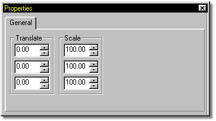
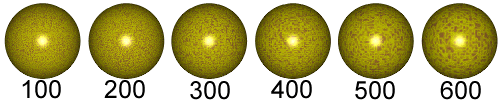

To create a material using the Noise combiner, right click the attribute you
wish to change and select “Noise” from the “Change Type To” menu. The type “Noise” will appear in the Materials tree, followed by two attributes.The two
attributes will be combined together in a noisy fashion.
To create a material using the Noise combiner, right click the attribute you
wish to change and select “Noise” from the “Change Type To” menu. The type “Noise” will appear in the Materials tree, followed by two attributes.The two
attributes will be combined together in a noisy fashion.
The Noise combiner has it's own set of adjustable attributes.

Since the noise texture occupies a 3-D space, the X, Y, and Z Translation values allow you to move the noise texture through this space.

Noise Scale Examples
The noise texture can be scaled in any of the three directions by entering values in the X, Y & Z Scale parameters. Scale is the most common adjustment for noise. If one axis is made much larger than the others, it will cause the noise to streak, a very common noise effect.
Related Topics:
About Materials
Attributes
Turbulence
Checker Combiner
Gradient Combiner
Spherical Combiner